Регенеруючi маски для підсилення кольору натурального, фарбованого та мелірованого волосся
 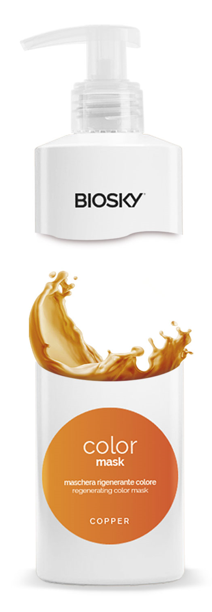
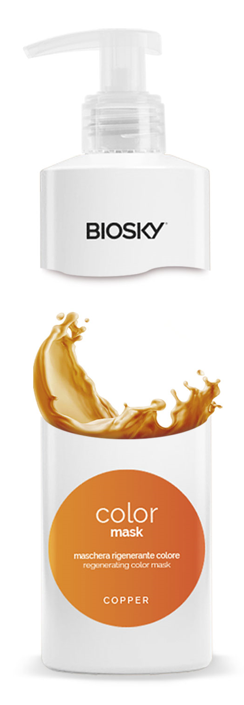
 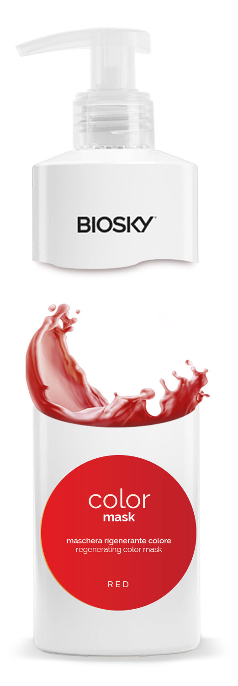
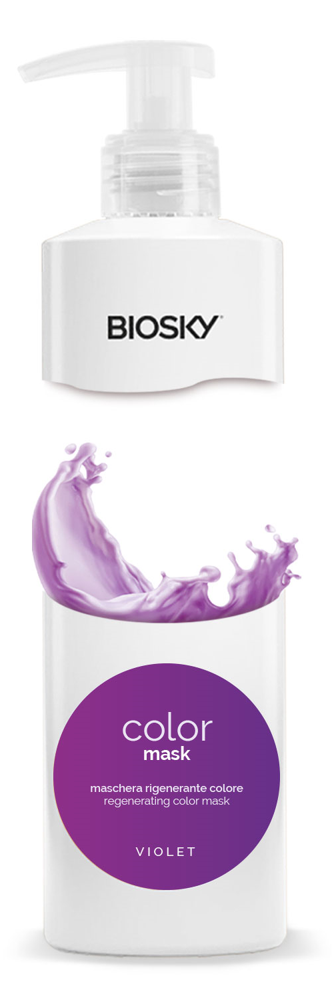
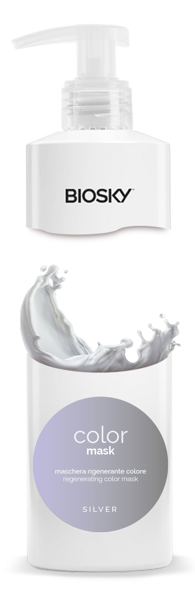
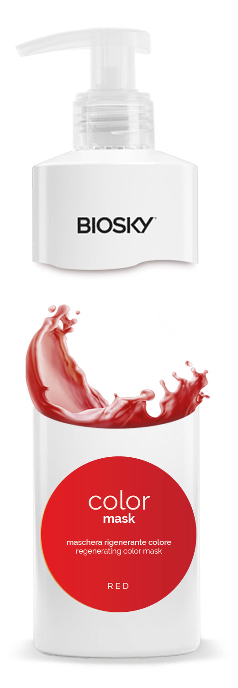
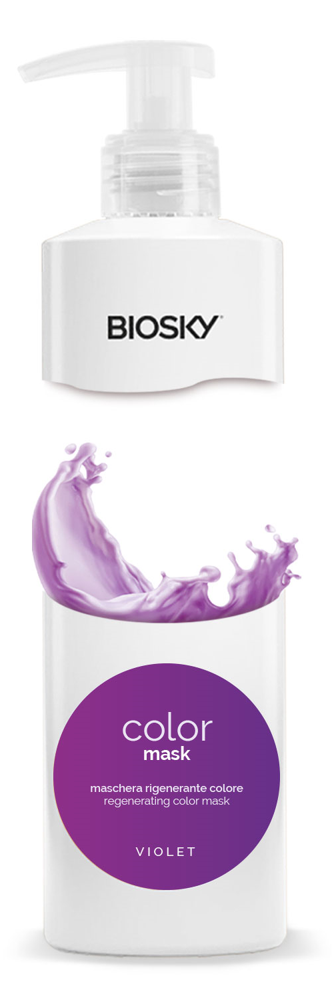
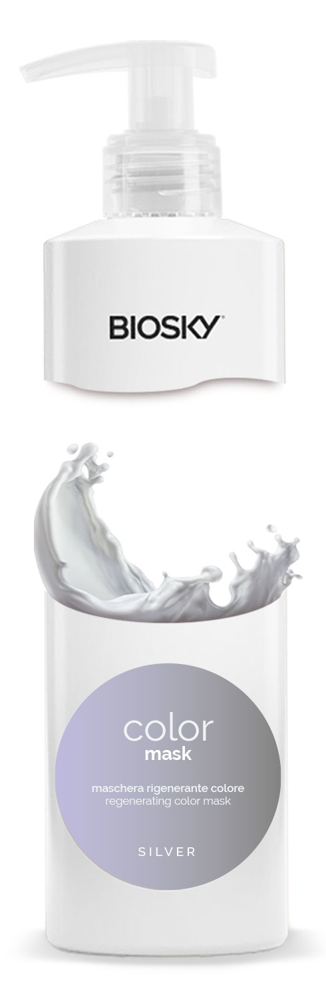

UA

EN

RU
Інформаційний буклет
BIOSKY TRICOL - продукти для салонних процедур, домашнього догляду і укладання волосся. Їх відрізняє інноваційна рецептура, багата натуральними активними інгредієнтами і безумовно італійською якістю.
Регенеруючi маски для підсилення кольору натурального, фарбованого та мелірованого волосся
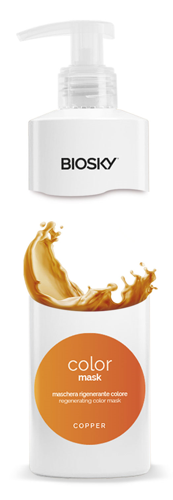
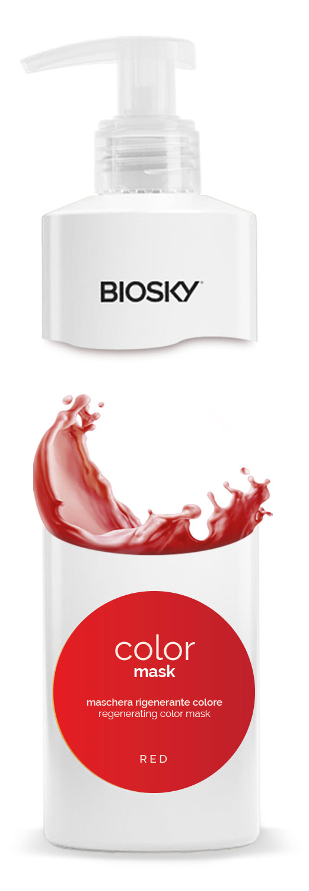
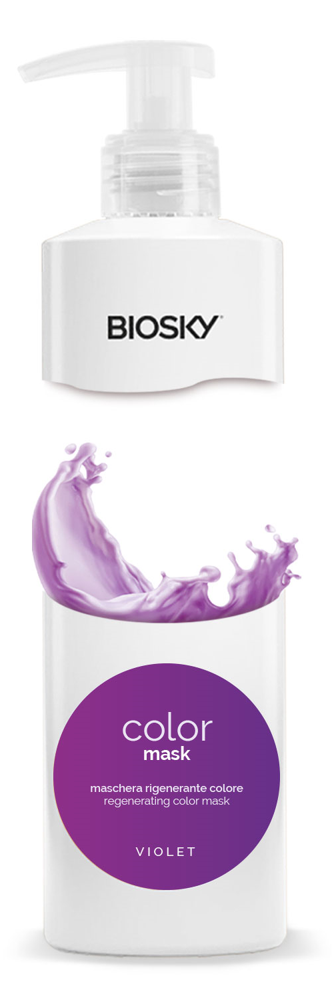
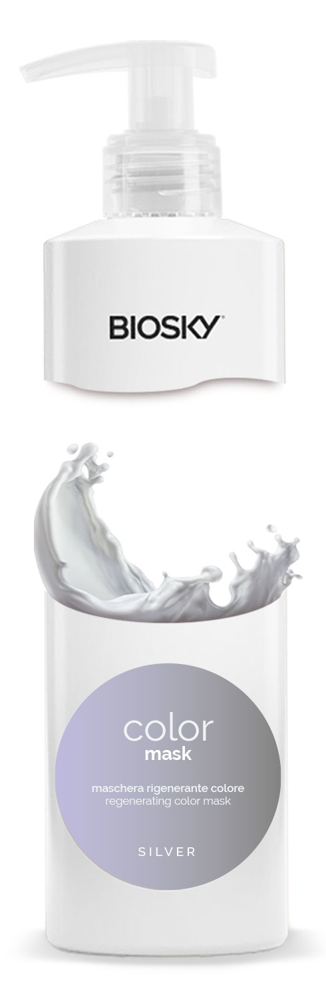
Особливий догляд фарбованого та хімічно обробленого волосся, закриває лусочки і довше зберігає колір волосся.
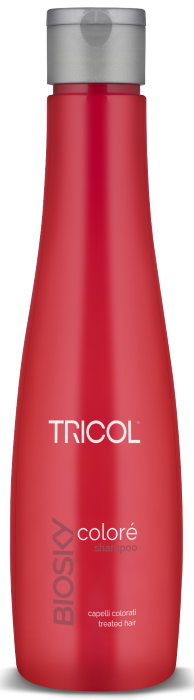 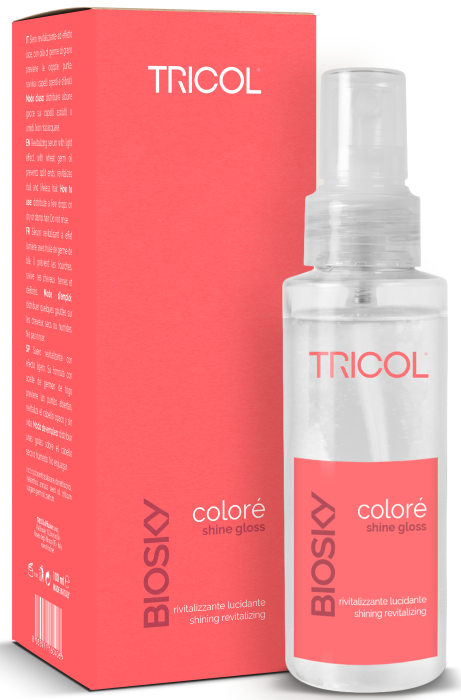
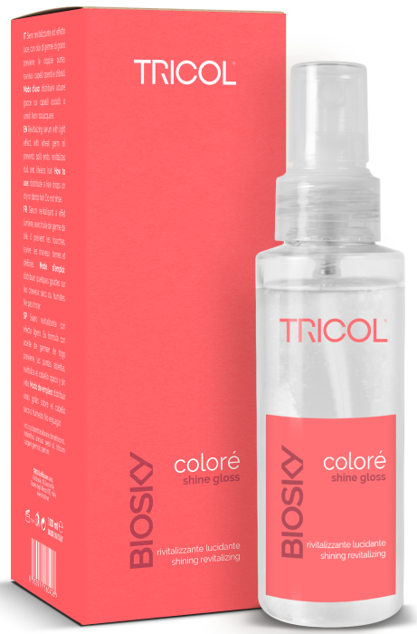
Відновлювальний догляд для дуже пошкодженого волосся. Сприяє ущільненню кутикули, а також зміцненню та захисту волокон волосся завдяки антиоксидантній дії. Волосся відразу стає густішим, більш м’яким та блискучим.
 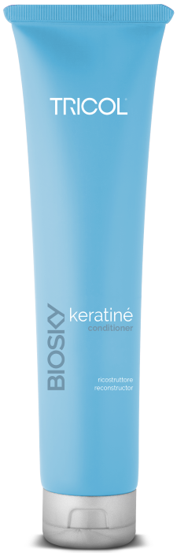
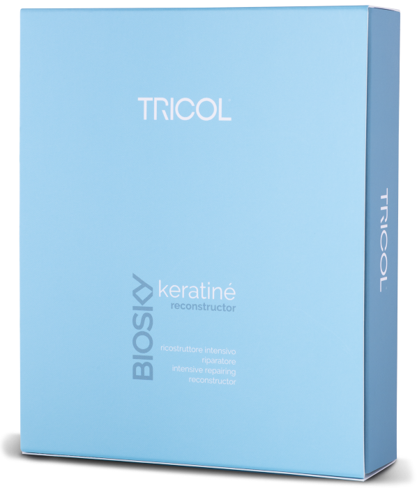
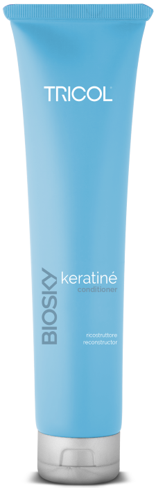
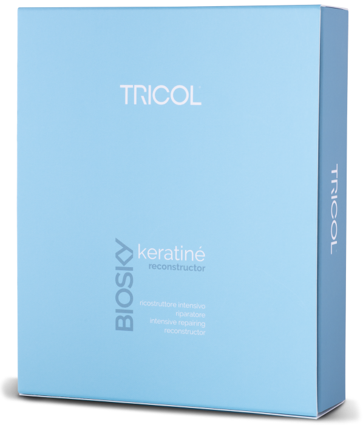

Особлива процедура для сухого, зневодненого, неслухняного та кучерявого волосся. Зволожує та робить волосся більш слухняним.
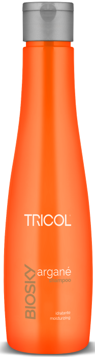 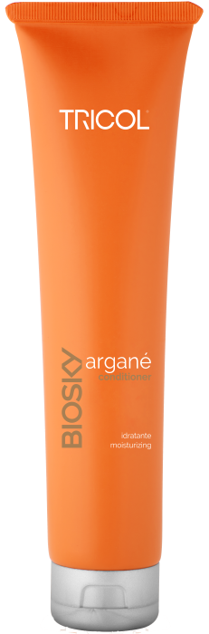 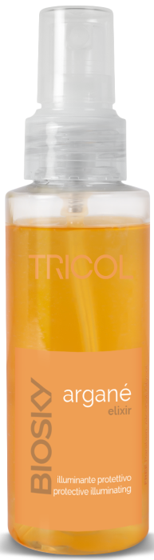Особливий догляд проти десквамації та надлишків шкірного сала


Информационный буклет
BIOSKY TRICOL - продукты для салонных процедур, домашнего ухода и укладки. Его отличает инновационная рецептура, богатая натуральными активными ингредиентами и безусловно итальянское качество.
Регенерирующие маски для усиления цвета натуральных, окрашенных и мелированных волос
Особый уход для окрашенных и химически обработанных волос, закрывает чешуйки и дольше сохраняет цвет волос
Нежная питательная процедура для волос для частого использования


Специальная процедура для тонких волос, придает волосам объем и густоту

Особый уход для профилактики выпадения волос

Особое лечение против десквамации и избытка кожного сала
Information booklet
BIOSKY TRICOL - products for salon procedures, home care and styling. It is distinguished by Its innovative formulation, rich in natural active ingredients and Italian quality.
Regenerating masks to enhance the color of natural, colored and highlighted hair
Special care for colored and chemically treated hair, closes the scales and preserves hair color longer
Gentle nourishing hair treatment for frequent use
Special treatment for thin hair, gives hair volume and density
Special care to prevent hair loss
Special treatment against desquamation and excess sebum